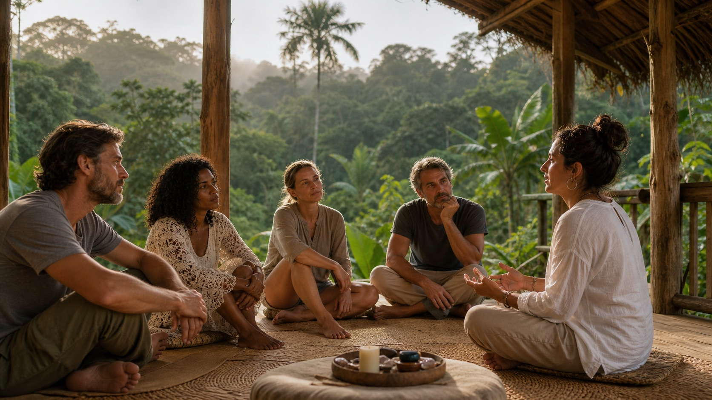

Six nights’ accommodation
Comfortable lodging in a natural setting in Bocas del Toro. The exact venue and room arrangements are still to be confirmed publicly.
A seven-day gathering in the jungles of Bocas del Toro, combining preparation, facilitated ceremonies, daily embodied practices, community reflection, and post-retreat integration guidance.

The experience begins with listening, preparation, informed choice, and a clear relationship with the people holding the space.
The published retreat materials describe a supported residential experience between jungle and beach. Final schedules and participant requirements will be shared during the review process.
Comfortable lodging in a natural setting in Bocas del Toro. The exact venue and room arrangements are still to be confirmed publicly.
Light retreat meals with vegan, vegetarian, and other dietary needs considered during participant review.
Morning embodied practices, sound-based sessions, sharing circles, rest, and guided reflection.
A pre- and post-retreat guidebook plus facilitator support intended to help participants prepare and reflect afterward.
The planned program includes three ayahuasca ceremonies, a cacao ceremony with Bobinsana tea rituals, a Temazcal ceremony, jungle exploration, and a healing-plant bath. Participation in any ceremonial element is subject to informed consent, screening, facilitator approval, and the final safety protocol.
Founder of Rainbow Sanctuary, supporting the reflective, energy-awareness, and integration dimensions of the gathering.
Described in the retreat materials as a Quechua lineage holder and ceremonial guide with more than ten years of experience in Amazonian and Andean plant-medicine traditions.
The early-bird rate requires a 50% deposit before 1 September 2026. Currency is United States dollars and rates are per person.